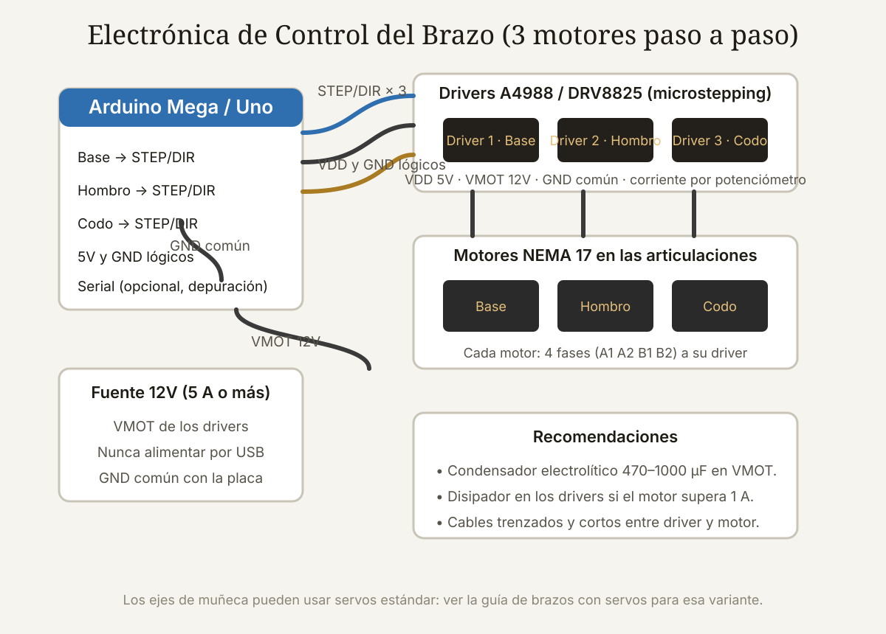

Qué cubre esta guía
- Por qué imprimir en 3D un brazo robótico
- Planificación: alcance, carga útil y grados de libertad
- Lista de materiales completa
- Diseño: modelos listos o piezas propias
- Parámetros de impresión recomendados
- Motores paso a paso y drivers
- Electrónica y alimentación
- Ensamblaje mecánico paso a paso
- Código: mover el brazo con AccelStepper
- Calibración: pasos por grado y homing
- Problemas comunes y soluciones
- Conclusión
- Preguntas frecuentes
Por qué imprimir en 3D un brazo robótico
La impresión 3D FDM (modelado por deposición fundida) se convirtió en la forma más accesible de construir un brazo robótico sin depender de kits caros ni de mecanizados de taller. Un brazo de acrílico cortado por láser limita el diseño a piezas planas; uno impreso en 3D puede tener geometrías que ningún kit ofrece: cajas de engranajes integradas, soportes de rodamiento a medida, pasacables y piezas que se reimprimen en horas si se rompen.
Las ventajas concretas frente a otras técnicas:
- Coste marginal mínimo: un kilogramo de filamento PLA cuesta menos que una sola pieza mecanizada y alcanza para imprimir un brazo completo.
- Iteración rápida: si una articulación tiene demasiado juego o no calza, se corrige el modelo y se reimprime esa pieza, no todo el conjunto.
- Peso bajo: el plástico reduce la masa de los eslabones, lo que alivia el torque que deben entregar los motores.
- Curva de aprendizaje valiosa: aprender a diseñar para impresión 3D es una habilidad que se transfiere directo a la fabricación de cualquier otro robot.
La desventaja principal es la rigidez: el plástico impreso es menos rígido que el aluminio, y las piezas largas pueden flexionarse bajo carga. Por eso la regla de oro es mantener los eslabones cortos y gruesos, y nunca imprimir piezas estructurales con menos del 30 % de relleno.
Planificación: alcance, carga útil y grados de libertad
Antes de descargar el primer STL, define tres números: cuánto debe alcanzar (distancia horizontal máxima desde la base), cuánto debe levantar (carga útil en la pinza) y cuántas articulaciones necesita.
| Configuración | Alcance típico | Carga útil | Uso recomendado |
|---|---|---|---|
| Brazo pequeño de 3 ejes (base, hombro, codo) | 15–25 cm | 100–300 g | Pinza de demostración, pick & place ligero |
| Brazo de 4 ejes con muñeca | 25–40 cm | 200–500 g | Robótica educativa, primeras rutinas |
| Brazo de 5–6 ejes con NEMA 17 | 40–60 cm | 300–800 g | Proyectos serios, orientación completa de herramienta |
Para un primer proyecto, tres ejes movidos por motores paso a paso más una pinza con servo es el equilibrio perfecto: menos piezas, menos puntos de juego mecánico y un presupuesto cercano a los 60–90 USD. Con esa base puedes escalar después a seis ejes.
Lista de materiales completa
Esta lista corresponde a un brazo de 3–4 ejes con motores paso a paso, la configuración más didáctica y confiable:
| Componente | Cantidad | Función | Coste orientativo (USD) |
|---|---|---|---|
| Filamento PLA o PETG (1,75 mm) | 1 kg | Estructura y piezas | 15–25 |
| Motor NEMA 17 (bipolar, 1,8°/paso) | 3–4 | Articulaciones | 10–15 c/u |
| Driver A4988 o DRV8825 | 3–4 | Control de corriente del motor | 2–5 c/u |
| Placa Arduino Uno o Mega | 1 | Controlador | 8–20 |
| Fuente de 12V DC (5 A o más) | 1 | Alimentación de motores | 12–20 |
| Rodamientos 608 o 623 | 4–8 | Articulaciones de la base y el hombro | 1–2 c/u |
| Tornillería M3 y M5, insertos de latón | — | Uniones | 5–10 |
| Condensador 470–1000 µF / 25V | 1 | Estabilizar VMOT | 1 |
| Servo SG90 o MG90 (opcional) | 1 | Pinza | 2–4 |
Diseño: modelos listos o piezas propias
Tienes dos caminos para conseguir las piezas:
1. Descargar un diseño probado. Plataformas como Printables, Thingiverse y Cults3D alojan cientos de brazos robóticos con motores paso a paso. Busca términos como robotic arm stepper, 3DOF arm o EEZYbotARM. Al elegir un diseño ajeno, revisa que indique: material y relleno usados por el autor, si necesita inserts o tuercas embebidas, y si otros usuarios reportaron resultados. Un diseño con 500 descargas y fotos de brazos terminados vale más que uno con renders perfectos.
2. Diseñar tus propias piezas. Fusion 360 (licencia personal gratuita), FreeCAD u Onshape permiten modelar el brazo a la medida de tus motores. Diseñar tu propio brazo te obliga a entender la relación entre dimensiones, torque y juego mecánico; es la mejor forma de aprender, pero suma semanas al proyecto. Si eliges este camino, respeta estas reglas:
- Diseña los alojamientos de motor con ajuste de interferencia leve o tornillos de fijación; un motor suelto destruye la precisión.
- Usa rodamientos en el eje de cada articulación, no plástico contra plástico.
- Deja huecos de 0,2–0,3 mm entre piezas móviles; demasiado apretado se traba, demasiado holgado genera juego.
- Redondea las esquinas interiores (filetes) de al menos el doble del diámetro de boquilla para evitar defectos de impresión.
Parámetros de impresión recomendados
La calidad de impresión define el juego mecánico del brazo. Un relleno bajo o una boquilla sucia se traducen en piezas débiles y articulaciones imprecisas. Parámetros de partida para FDM:
| Parámetro | Valor recomendado | Por qué |
|---|---|---|
| Material | PLA+ o PETG | PLA+ es rígido y fácil; PETG aguanta mejor impactos y calor |
| Altura de capa | 0,2 mm | Equilibrio entre velocidad y calidad |
| Perímetros | 4–5 | La pared exterior soporta el esfuerzo de flexión |
| Relleno | 40–60 % (giroide o cúbico) | Rigidez estructural sin peso excesivo |
| Top/bottom layers | 6–7 | Evita que se vea el relleno en las caras de apoyo |
| Soportes | Solo si el modelo lo requiere | Los soportes dejan marcas: usa tocar buildplate si es posible |
| Temperatura PLA+ | 215–225 °C boquilla / 55–60 °C cama | Adhesión de capas sin deformación |
| Velocidad | 50–70 mm/s | La calidad del acabado importa más que la velocidad |
Motores paso a paso y drivers
Los NEMA 17 bipolares son el estándar de facto para brazos impresos en 3D: entregan par de retención de 40–45 N·cm, son baratos y se controlan con drivers de bajo coste. Cada motor tiene cuatro cables (dos fases A y B) que se conectan al driver en el orden indicado por el fabricante; si las fases se invierten, el motor solo vibrará sin girar.
Los drivers A4988 y DRV8825 (y los silenciosos TMC2208/2209) hacen tres cosas: regulan la corriente máxima, interpretan los pulsos STEP y DIR, y ofrecen microstepping — dividen cada paso completo en fracciones (1/16 en el A4988) que reducen vibración y ruido a costa de un poco de par máximo.
Los pines clave del driver:
- STEP: cada pulso en este pin avanza el motor una fracción de paso.
- DIR: define el sentido de giro (alto/bajo).
- MS1–MS3: seleccionan el microstepping (por ejemplo, todos a VCC = 1/16 en el A4988).
- VMOT y GND: alimentación de potencia (12V) — con un condensador electrolítico de 470–1000 µF cerca del driver para absorber picos.
- VDD y GND: lógica (5V del Arduino).
Electrónica y alimentación
La topología es simple: el Arduino genera los pulsos STEP/DIR, los drivers amplifican la corriente, y los motores mueven las articulaciones. Una fuente externa de 12V alimenta VMOT de los drivers, y su tierra se une a la tierra del Arduino (GND común) para que la lógica tenga referencia.
- Pines: reserva dos pines digitales por motor (STEP y DIR). Con tres motores y una pinza, un Arduino Uno basta; si añades sensores de límite, encoders y pantalla, el Mega da más margen.
- Condensador: un electrolítico de 470–1000 µF / 25V entre VMOT y GND, lo más cerca posible del driver.
- Disipadores: los A4988 sin disipador trabajan al límite con motores de 1,5 A; pega un disipador pequeño con cinta térmica.
- Cableado: trenza o acorta los cables entre driver y motor; el ruido eléctrico en cables largos causa pasos perdidos.
Si el brazo se reinicia cuando arranca un motor, es un síntoma inequívoco de alimentación insuficiente o de picos sin filtrar: revisa la fuente y el condensador antes que el código.
Ensamblaje mecánico paso a paso
El orden de montaje evita rehacer trabajo:
- Base: instala el rodamiento en la base y fija el motor de rotación con su acople al plato giratorio. La base debe quedar firme sobre la mesa (tornillos o abrazadera) para que el resto del brazo no la vuelque.
- Hombro: monta el motor del hombro en su soporte y desliza el eslabón inferior; verifica que gire libre en todo el rango y que el cable del motor pase por el pasacables sin engancharse.
- Codo y antebrazo: repite el proceso; en esta articulación el juego mecánico se nota el doble, así que usa rodamientos y aprieta sin deformar las piezas.
- Muñeca y pinza: el servo de la pinza se atornilla al final del antebrazo. Prueba el servo por separado con un sketch de barrido antes de fijarlo.
- Cableado: pasa los cables por el interior o con cinchas hacia el exterior, dejando holgura en cada articulación para que el movimiento no los tense. Los cables tensados son la causa número uno de pasos perdidos intermitentes.
- Prueba estática: con el código de ejemplo, mueve cada eje individualmente a baja velocidad antes de hacer movimientos coordinados.
Código: mover el brazo con AccelStepper
La librería AccelStepper gestiona aceleración, desaceleración y velocidad máxima por motor, lo que evita los tirones que hacen perder pasos a los motores. Instálala desde el Gestor de Librerías del IDE de Arduino.
#include <AccelStepper.h>
// Motor 1: base (pines STEP, DIR)
// Motor 2: hombro (pines STEP, DIR)
// Motor 3: codo (pines STEP, DIR)
AccelStepper base(AccelStepper::DRIVER, 2, 5);
AccelStepper hombro(AccelStepper::DRIVER, 3, 6);
AccelStepper codo(AccelStepper::DRIVER, 4, 7);
const float PASOS_POR_GRADO = 17.78; // ver calibración
void setup() {
// Configuración de cada motor
base.setMaxSpeed(1200);
base.setAcceleration(600);
hombro.setMaxSpeed(800);
hombro.setAcceleration(400);
codo.setMaxSpeed(800);
codo.setAcceleration(400);
// Posición inicial: 90° en el hombro y el codo
hombro.moveTo(PASOS_POR_GRADO * 90);
codo.moveTo(PASOS_POR_GRADO * 90);
runTodos();
}
void loop() {
// Ejemplo: rotar la base de 0° a 180° y volver
base.moveTo(PASOS_POR_GRADO * 180);
runTodos();
delay(1000);
base.moveTo(0);
runTodos();
delay(1000);
}
void runTodos() {
// Avanza todos los motores hasta que terminen su destino
while (base.distanceToGo() != 0 ||
hombro.distanceToGo() != 0 ||
codo.distanceToGo() != 0) {
base.run();
hombro.run();
codo.run();
}
}Nota: moveTo() trabaja con posición absoluta en pasos. Llevar un registro mental de la posición en pasos y convertir a grados con la constante calibrada evita errores de ángulo acumulados.
Calibración: pasos por grado y homing
El número clave del brazo es cuántos pasos recibe el motor para girar un grado:
pasos_por_revolucion_motor = 200 // NEMA 17, 1,8°/paso
microstepping = 16 // A4988 en 1/16
relacion_reductora = 3 // poleas o engranajes 3:1
pasos_por_revolucion_salida = 200 * 16 * 3 // = 9.600
pasos_por_grado = pasos_por_revolucion_salida / 360 // ≈ 26,67Con ese cálculo previo, calibra finamente en la práctica: ordena mover exactamente 90° y mide el ángulo real con un transportador de brazo o un inclinómetro de teléfono. Ajusta la constante con una regla de tres y repite hasta que el error sea menor a 1°.
Para que el brazo siempre sepa dónde está al encender, añade sensores de límite (finales de carrera) en cada eje: al arrancar, mueve el eje lentamente contra el sensor y cuenta esa posición como cero. Sin homing, cada encendido pierde la referencia absoluta y las posiciones quedan desplazadas.
Problemas comunes y soluciones
| Síntoma | Causa más probable | Solución |
|---|---|---|
| El motor zumba pero no gira | Fases mal conectadas o corriente demasiado baja | Revisa el orden A1-A2-B1-B2 y el Vref |
| Pierde pasos al acelerar | Aceleración demasiado alta o alimentación débil | Baja la aceleración; sube la corriente; verifica 12V estables |
| El brazo se reinicia solo | Picos de corriente sin filtrar o fuente insuficiente | Condensador en VMOT y fuente de 5 A como mínimo |
| Juego excesivo en una articulación | Rodamiento mal calzado o tuercas flojas | Calza el rodamiento con presión suave y usa threadlocker |
| Piezas que se parten al apretar | Relleno bajo o agujeros sin inserts | Usa inserts de latón y relleno ≥ 40 % |
| El driver se calienta mucho | Corriente alta sin disipador | Disipador + ventilación; revisa Vref |
Conclusión
Construir un brazo robótico impreso en 3D con motores paso a paso es el proyecto que une las dos habilidades más demandadas en robótica de bajo coste: fabricación aditiva y control de motores. El resultado es una plataforma que puedes extender indefinidamente — más ejes, sensores de límite, encoders, pinza con retroalimentación o control por Bluetooth.
El secreto está en los detalles que este artículo repite una y otra vez: alimentación con margen, drivers bien configurados, rodamientos en todas las articulaciones y calibración con homing. Si respetas esas cuatro reglas, el brazo se moverá con una suavidad y repetibilidad que sorprende a quien lo ve por primera vez.
Preguntas frecuentes
¿Qué motores necesito para un brazo robótico impreso en 3D?
Para un primer brazo, motores NEMA 17 bipolares de 1,8° por paso con par de retención de 40–45 N·cm son la opción más equilibrada: hay drivers baratos, documentación abundante y suficiente par para eslabones de 20–30 cm. Los NEMA 23 son más potentes pero más pesados y exigen drivers y fuentes más caras; los servos MG996R sirven para brazos muy ligeros, pero no entregan la repetibilidad angular de un paso a paso bien calibrado.
¿PLA o PETG para las piezas del brazo?
El PLA+ es el punto de partida ideal: rígido, fácil de imprimir y barato. Su debilidad es la temperatura (se deforma alrededor de 55–60 °C) y la fragilidad a impactos. El PETG es más tenaz y tolera más calor, pero es más propenso a hilos y requiere temperaturas más altas. Si el brazo trabajará cerca de motores que se calientan o a la intemperie, elige PETG; para un taller o escritorio, PLA+ es suficiente.
¿Cuánto cuesta construir un brazo robótico casero en 3D?
Con tres motores NEMA 17, drivers, un Arduino Uno, un kilo de filamento, rodamientos y tornillería, el presupuesto se mueve entre 60 y 90 USD. Si ya tienes impresora 3D y Arduino, el desembolso adicional es de unos 40–50 USD por motores, drivers y fuente. Comparado con kits comerciales de brazo educativo (80–200 USD), sale competitivo y, a diferencia de un kit, cada pieza es reemplazable y personalizable.
¿Por qué mi brazo pierde pasos y se descoloca?
La causa número uno es la aceleración demasiado agresiva: el motor no puede seguir el ritmo de pulsos y pierde pasos, acumulando un error de posición. La segunda causa es la alimentación: picos de corriente que hacen caer el voltaje y reiniciar la placa. La tercera es mecánica: juego excesivo o fricción en una articulación que el motor no puede vencer de forma constante. Baja la aceleración, refuerza la fuente y lubrica o afloja la articulación problemática.
¿Puedo controlar un brazo de motores paso a paso sin Arduino?
Sí: una Raspberry Pi con los drivers conectados a sus GPIO (con la librería RPi.GPIO o con una placa de control dedicada como la HAT de Adafruit), un ESP32 con la librería AccelStepper, o incluso una placa RAMPS de impresora 3D con Marlin adaptado son alternativas reales. El ESP32 es especialmente interesante porque añade Wi-Fi/Bluetooth para control remoto. Para empezar, sin embargo, el Arduino sigue siendo lo más simple y robusto.
Este artículo es contenido editorial independiente: no contiene ubicaciones patrocinadas ni enlaces de afiliado. Si en futuras actualizaciones se agregan enlaces a proveedores de componentes, serán identificados explícitamente. El código y las conexiones son referenciales y deben adaptarse y probarse con tu propio hardware. Si detectas un error en esta guía, por favor avísanos.
Sigue aprendiendo
Con la mecánica lista, aprende a controlar una pinza y más articulaciones en la guía del Brazo Robótico de 6 Ejes con Arduino, y si piensas comprar una impresora para este proyecto, revisa las Mejores Impresoras 3D para Brazos Robóticos.
Fuentes primarias y lecturas recomendadas
Referencias que sustentan los conceptos de impresión, control de motores paso a paso y calibración. Los valores de corriente y par dependen del fabricante del motor y del driver.
- AccelStepper — Documentación oficial de la librería
- Arduino Reference — Librería Stepper
- Pololu — Hoja de datos y guía del driver A4988
- Pololu — Guía del driver DRV8825
- RepRap Wiki — Placa RAMPS 1.4 y su electrónica
- Teaching Tech — Guía de calibración de impresoras 3D
Enlaces revisados: 15 de agosto de 2026.